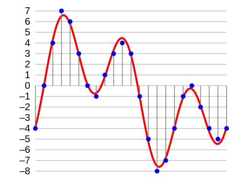

Representing Sound Digitally
Table of Contents
1 What is sound?
Learn It
- A sound is literally a vibration that travels through a medium than can be heard when it reaches an ear.
- Normally that medium would be air.
- The compression and rareification of air can be represented graphically as shown below.
- The image from the oscilloscope shows a sound wave with varying amplitudes and frequencies.
- If we were to look at the y values, then we would see that the sound wave is fundamentally analogue in nature.
Research It
- When we talk about sound, we often use the terms volume and pitch.
- What do these terms actually mean with reference to a sound wave?
- Why would it be problematic to store analogue representations of sound on a computer?
2 Physical to Electrical
Learn It
- In order to store sound in a digital format, there are a few steps that need to be followed.
- The sound must first be captured with an input device.
- The sound is converted to an analogue electrical signal.
- The electrical signal needs to be sampled.
- The digital data can then be stored.
Research It
- Use online resources to find out how a microphone can capture vibrations in the air and convert them to an analogue electrical signal.
3 Sampling
Learn It
- Sampling is the process of turning an electrical analogue stream of data, into a digital stream of data.
- The process involves recording the amplitude of an electrical signal at set intervals, rounding the value and converting it to binary (typically 16 or 32 bits for sound).
- For sound, this sampling normally occurs 44100 times per second. We call this the Sample Rate and it is normally expressed as 44.1kHz.
- The number of bits we use to store the data is known as the Sample Depth.
- Obviously, the higher the Sample Rate and the larger the bit depth, the higher the quality of the resulting audio.

- The image above is a graphical representation of how an analogue electrical signal can be sampled and converted to an integer, ready for storing as a binary integer.
Research It
- There is a good reason that we tend not to sample sounds at a higher sample rate than 48kHz. It is to do with Nyquist's Theorem.
- Use online resources to make notes on what is stated in Nyquist's Theorem.
4 Compression
Learn It
- Even when digitised, an audio track can have a huge file size, that makes it impractical to use.
- For this reason we use compression, to reduce the file sizes.
- There are two types of compression:
- Lossless e.g. Dolby TrueHD
- Lossy e.g. MP3
Research It
- Find out what the difference between lossless and lossy compression are.
- Find out what the percentage compression can be achieved with audio files.